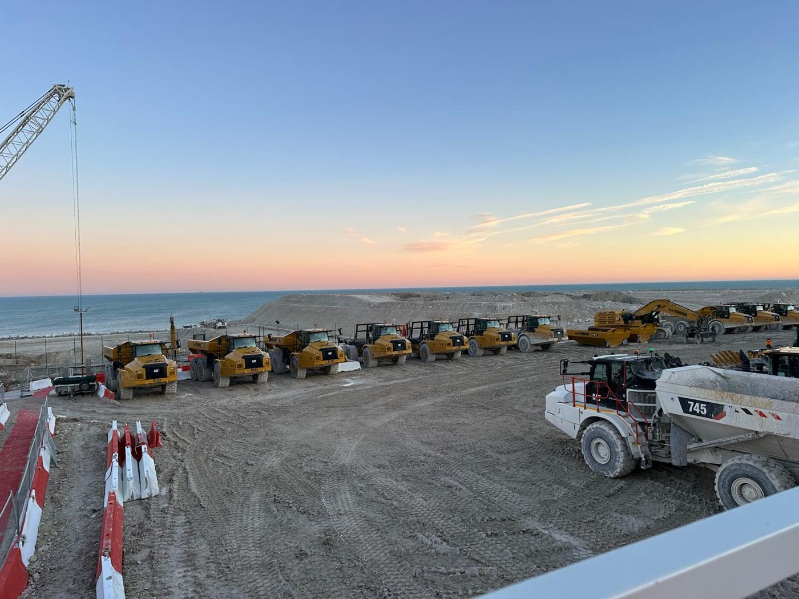
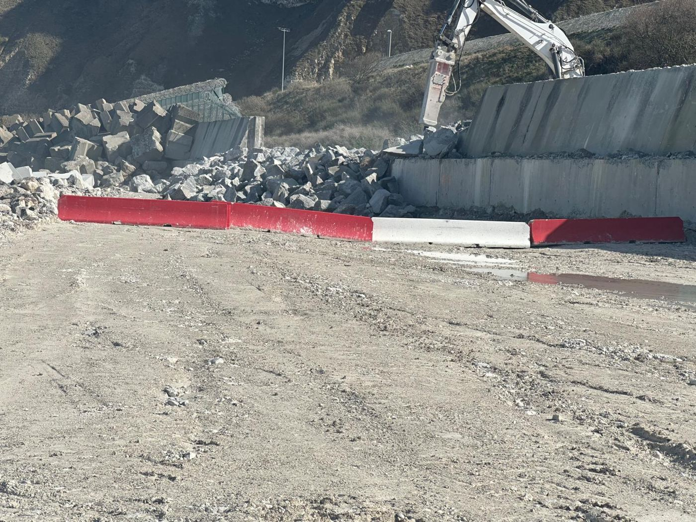
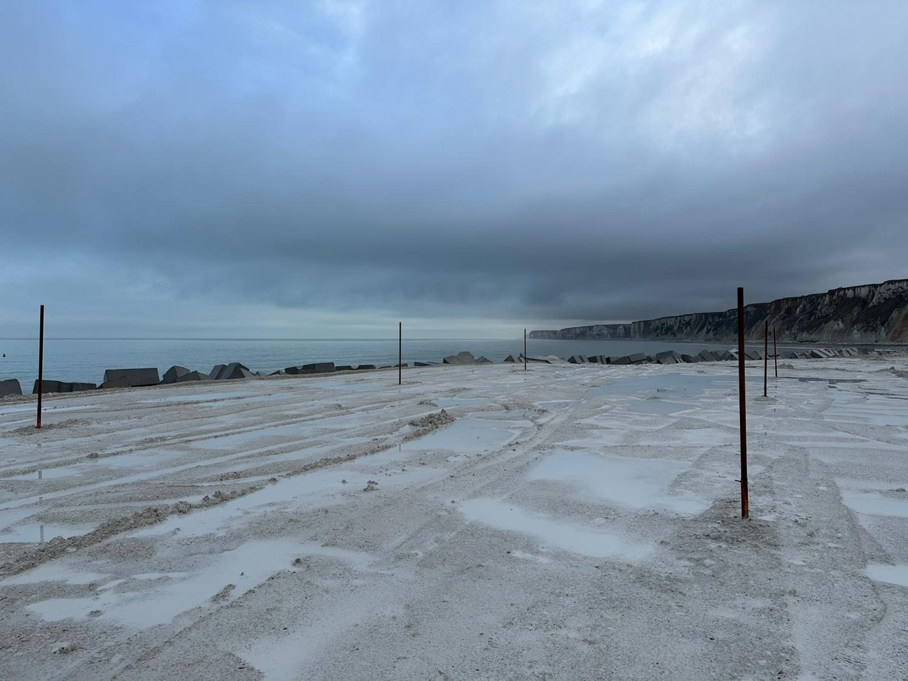
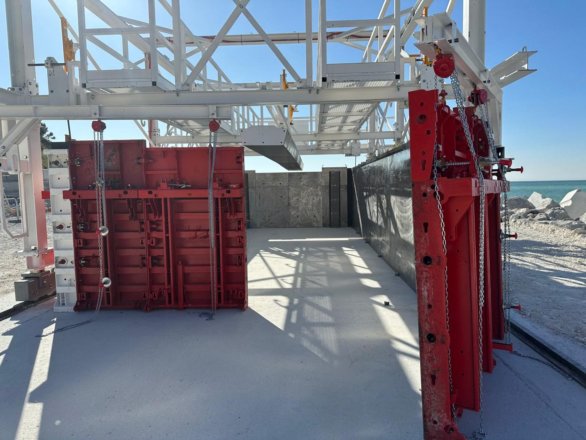
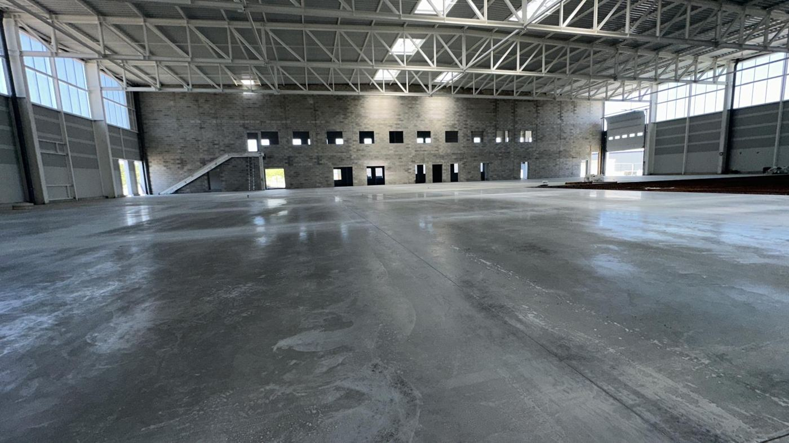
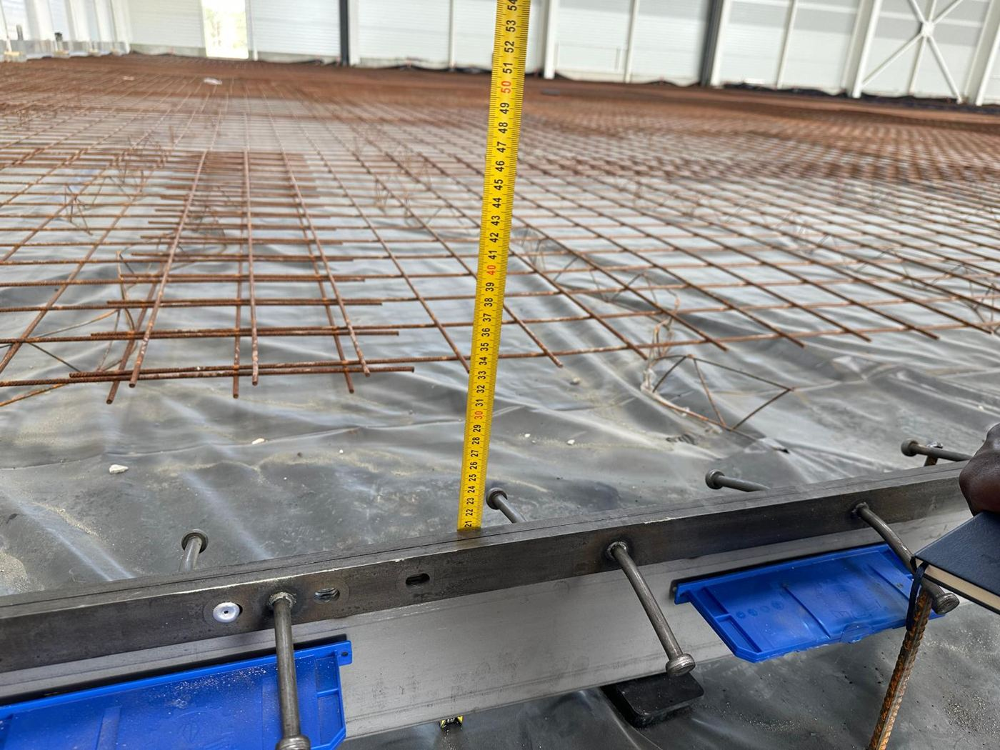
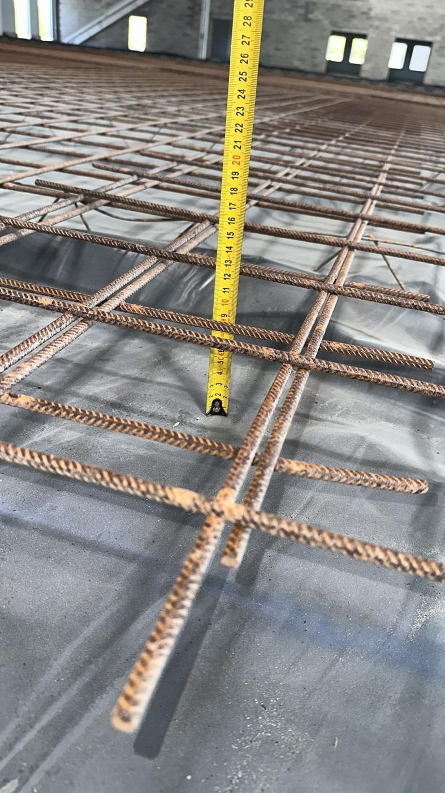
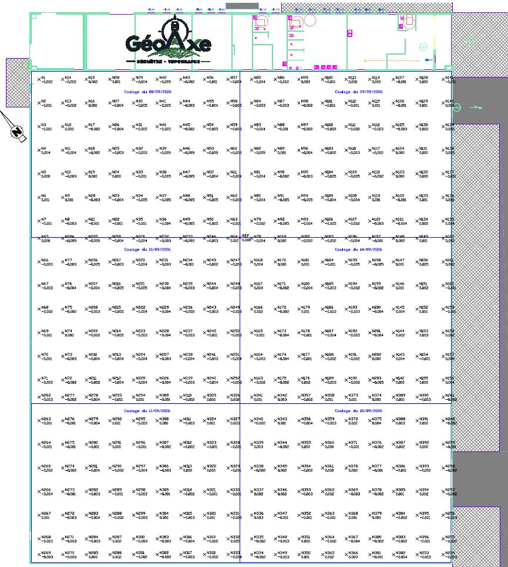

Expériences terrain
GéoAxe a été créé en septembre 2026. Voici des missions menées auparavant par son ingénieur géomètre-topographe, comme salarié puis comme indépendant, sur des chantiers exigeants.

Suivi topographique du chantier EPR2 de Penly
Normandie (76) — pour un grand groupe de BTP, en tant que géomètre salarié.
Suivi topographique des travaux d'extension sur la mer du site de la future centrale nucléaire EPR2 de Penly : contrôle des terrassements, de la plateforme et des ouvrages en cours de construction.
- Matériel : GNSS, station totale, niveau, scanner laser.
- Logiciels : Covadis, AutoCAD, AutoCAD Civil 3D.
- Livrables : plans DWG et PDF, profils, fichiers de points, rapports de suivi.




Contrôle de planéité d'un dallage industriel
Couffouleux (81) — pour un bureau d'études, en tant que géomètre indépendant.
Construction d'une usine de fabrication de pièces aéronautiques : vérification de l'épaisseur du dallage et contrôle de sa planéité, avec une tolérance exigée de ± 5 mm.
3 000 m²
de dallage contrôlé
± 4 mm
de précision obtenue, pour ± 5 mm exigés
- Matériel : niveau numérique Leica Sprinter 150M.
- Logiciel : AutoCAD Civil 3D.
- Livrables : plans DWG et PDF, fichiers de points, rapports journaliers.



Un projet à faire mesurer ?
Décrivez-moi votre besoin : vous recevez un devis clair et gratuit sous 24 heures, avec le périmètre de mission, les livrables et le délai.